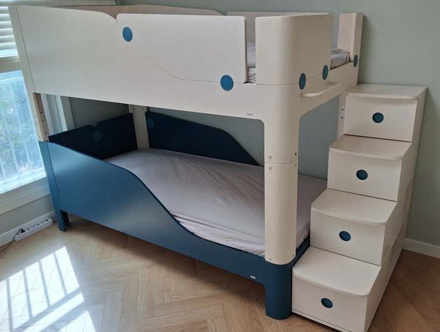

홈 › 일룸 가구이전설치
일룸 가구이전설치
아이 방 가구 해체부터 재설치까지
일룸 벙커침대, 팅클팝 이층침대, 쿠시노, 책상·책장처럼 아이 방 가구를 옮겨야 하는데 일정이 맞지 않거나 비용이 부담되셨나요? 코니처는 일룸 가구를 해체해서 옮기고 새 방에서 다시 설치하는 가구이전설치 업체예요. 지역마다 있는 코니처 기사님들의 평균 경력은 10년이 넘어요.

일룸 가구이전설치 비용
- 벙커침대15만 원부터
- 팅클팝 이층침대16만 원부터
- 쿠시노11만 원부터
- 침대 (싱글)10만 원부터
- 책상·책장 (세트)13만 원부터
표시된 금액은 최소 시작 금액이에요. 가구 크기와 수량, 이전 거리, 층수, 엘리베이터 사용 여부 등 작업과 현장 상황에 따라 금액이 달라져요. 정확한 금액은 사진을 보고 문자로 안내드려요.
현금가 기준이며, 카드 결제나 현금영수증이 필요하면 부가세가 별도예요.
문자 상담 신청하기일룸 가구별 이전설치 안내
아이 방 가구는 종류마다 분해 순서가 달라요. 궁금한 가구를 눌러 작업 과정과 사례를 확인해 보세요.


일룸 가구, 왜 이전설치가 필요할까요
일룸 가구는 아이 방에 맞춰 쓰는 가구가 많아요. 벙커침대와 이층침대는 높이가 있어서 다시 조립할 때 단단히 맞물려야 하고, 책상 세트는 상부장과 책장이 연결돼 있어서 통째로 옮기기 어려워요. 일반 이사에서는 짐 운반이 중심이라, 아이 침대를 나사 하나까지 풀고 다시 맞추는 작업은 따로 알아보시는 분이 많아요. 코니처는 그 분해와 재조립을 맡아서, 새 방에서도 아이가 전처럼 쓸 수 있게 설치해 드려요.
일룸 이전설치 비용, 이렇게 정해져요
표에 적힌 일룸 이전설치 비용은 시작 금액이라, 같은 벙커침대라도 집마다 금액이 달라질 수 있어요. 금액을 정할 때 보는 건 이 네 가지예요.
- 모델과 구성벙커침대와 팅클팝은 모델에 따라, 쿠시노는 몇 개를 이었는지에 따라, 책상은 책장·상부장 구성에 따라 달라요.
- 얼마나 멀리 가는지아이 방끼리 바꾸는 방간이동과 다른 도시로 가는 이사는 금액이 달라요.
- 계단으로 옮기는지엘리베이터가 없거나 쓸 수 없는 집이면 추가 비용이 생길 수 있어요.
- 추가 작업이층침대를 단층으로 바꾸고 남는 부재를 버리는 것처럼 작업이 더해지면 금액에 반영돼요.
가구 사진과 지역을 보내주시면 확인 후 정확한 금액을 문자로 알려드려요.
코니처 일룸 이전설치는 이렇게 진행돼요
-
사진 보내기
아이 방 가구 사진을 찍어서 지역, 거리, 엘리베이터 여부와 함께 문자로 보내주세요.
-
금액과 날짜 정하기
사진을 확인한 뒤 예상 금액과 방문 가능한 날짜를 답장으로 알려드려요.
-
방문해서 분해하기
정한 날 지역 기사님이 찾아가 침대와 책상을 분해하고 포장해요.
-
새 방에 설치하기
새 방으로 옮긴 가구를 다시 조립하고, 흔들림 없이 맞물렸는지 확인해요.
일룸 가구 이전, 이런 분들이 문의해요
- 이사 날짜가 급할 때원하는 이사 날에 맞춰 줄 업체를 찾는 분들이 많아요.
- 여러 곳에 견적을 비교할 때아이 방 가구 구성에 맞는 금액을 따로 받아보고 싶을 때 문의를 주세요.
- 아이 방 가구를 한 번에 옮길 때침대, 책상, 책장을 함께 옮기시는 경우가 많아요.
- 이층침대를 단층으로 바꿀 때아이가 크면서 침대 구성을 바꾸는 경우도 상담해요.
일룸 가구 견적 받을 때 보내주실 것
옮기실 일룸 가구의 전체 사진을 가구마다 한 장씩 찍어 주세요. 벙커침대라면 계단 쪽이, 쿠시노라면 연결된 전체 모습이 나오게 찍어 주시면 좋아요. 침대 안쪽 품질표시 라벨이 보이면 함께 찍어 주세요. 어디서 어디로 옮기는지, 거리와 층수, 엘리베이터 여부, 원하는 날짜까지 적어 주시면 답장이 빨라요.
아이 방 이사 전 준비
침구와 장난감, 계단 수납장과 서랍 속 물건, 책장의 책은 미리 비워 주세요. 짐이 남아 있으면 분해 전에 정리 시간이 더 걸려요. 새 방에서는 가구를 놓을 자리를 비워 두시고, 벙커침대라면 천장 조명 위치도 한 번 확인해 주세요.
일룸 이전설치가 필요한 순간
최근 일룸 가구이전설치 작업 지역
일룸 가구 이전설치는 수도권 어디든 출장해요.
- 판교일룸 팅클팝 2층침대 · 분해 이사 재조립
- 신림일룸 벙커침대 · 단층으로 내림 설치
- 기흥 → 회기일룸 벙커침대 · 해체 후 이전 재조립
- 서초 방배일룸 쿠시노 · 방간이동
- 과천일룸 쿠시노 · 이전설치
- 광교신도시일룸 책장책상세트 · 해체 후 재설치
- 강동·하남일룸 모션베드 · 이전설치
자주 묻는 질문
일룸 공식 이전설치 서비스인가요?
아니요. 코니처는 일룸 공식 서비스가 아닌, 일룸 가구의 이전설치를 하는 독립 업체예요.
아이 방 가구를 하루에 다 옮길 수 있나요?
네, 같은 날 해체하고 새 방에 설치할 수 있어요. 침대와 책상을 함께 옮기면 가구 양을 보고 일정을 정해요.
모델명을 몰라도 상담할 수 있나요?
네, 가구 사진만 보내주셔도 괜찮아요. 가구 안쪽 품질표시 라벨이 보이면 함께 찍어 주세요.
일룸 가구 이전 비용은 언제 알 수 있나요?
가구 사진과 지역, 이전 거리, 엘리베이터 여부를 보내주시면 확인 후 문자로 금액을 알려드려요. 가구 종류와 구성에 따라 달라져요.
일룸 가구이전설치 견적 문의
아이 방 가구 사진과 출발·도착 지역을 보내주시면 금액과 일정을 알려드려요. 문자는 07~18시에 확인해요.
문자 상담 신청하기